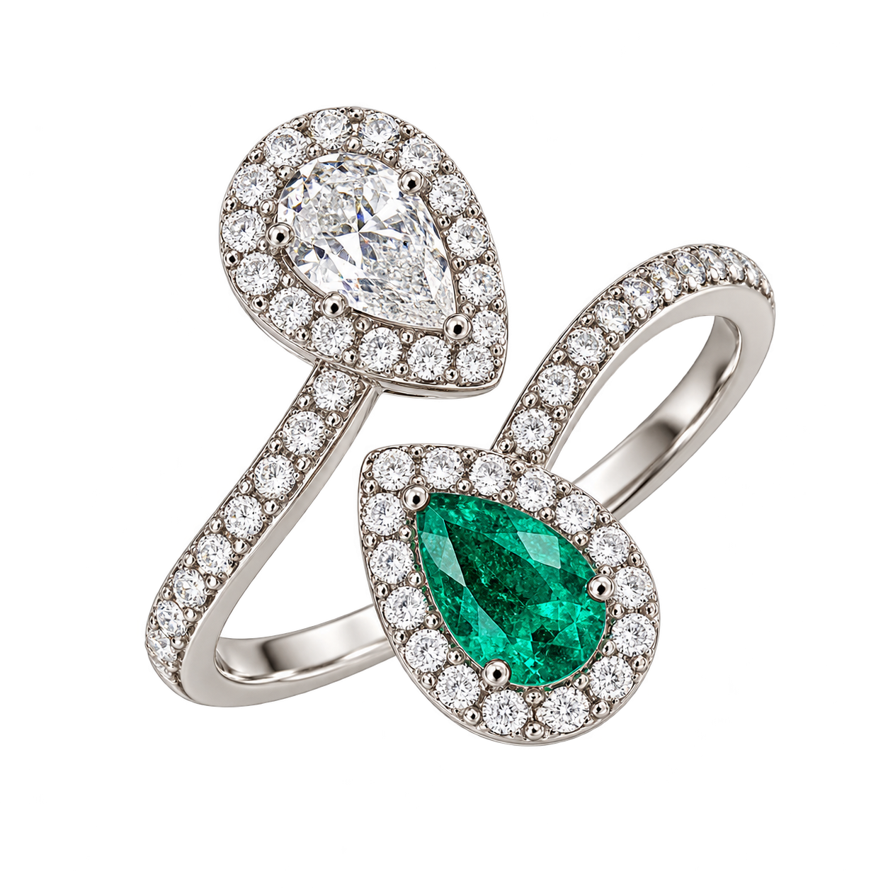
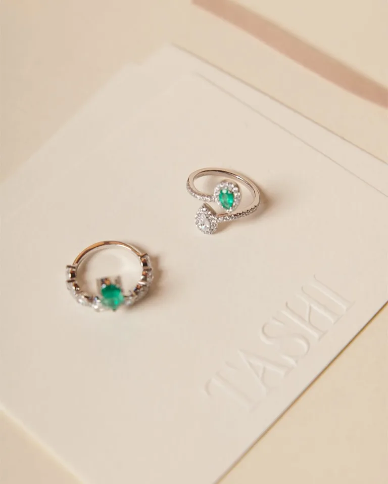
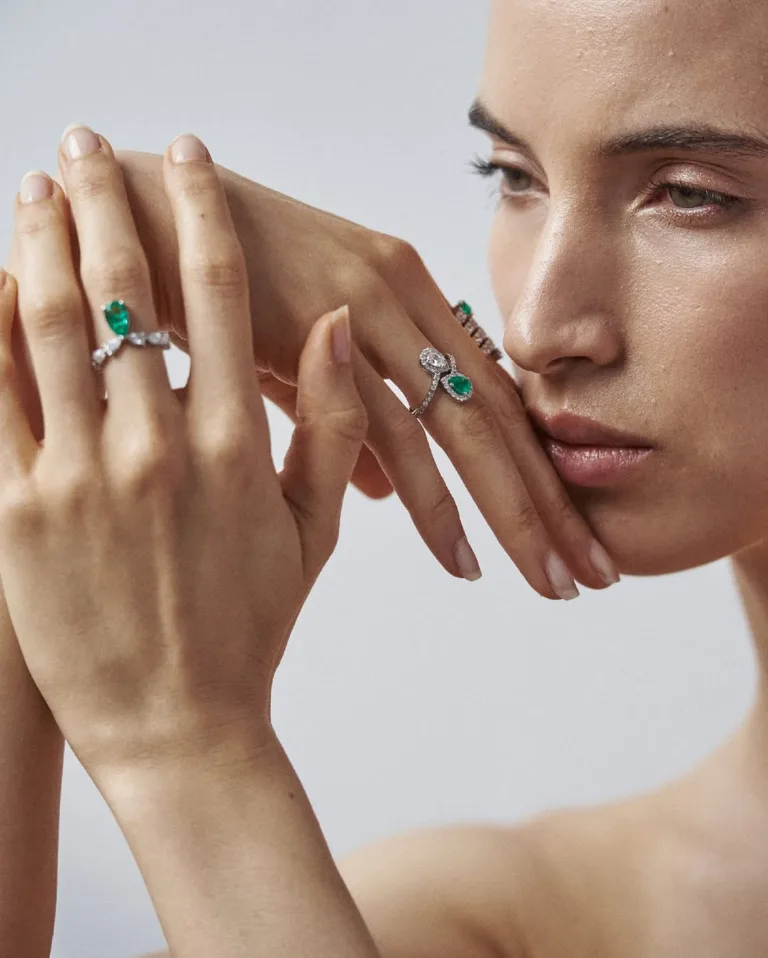

Bespoke fine jewelry · Oro de 18K
Cada joya, un legado.

Mueve el cursor sobre la joya para rotarla
Descubre tu próxima historiaUn encuentro.
Una joya.
Para celebrar, recordar o simplemente ser tú.
Empieza por el tipo de pieza que buscas.
Joyería a medida
Empieza con una idea.
Termina siendo tuya.
Una fecha, una persona, una nueva etapa. Diseñamos tu pieza en oro de 18K, con piedras preciosas o semipreciosas, según lo que imaginas y tu presupuesto.

Cuéntanos tu historia
Tu idea, una referencia o la ocasión que quieres celebrar.
Démosle forma
Elegimos juntos el diseño, las piedras y los detalles.
Hagámosla tuya
Recibe tu cotización y las condiciones de fabricación.
Hechas con las manos.
Pensadas con el corazón.
Tashi nació del deseo de Emily Sibaja de materializar las ideas de quienes aman las joyas delicadas y elegantes.
“Una pieza para ser elegante no necesariamente debe ser costosa, sino pensada y creada con buen gusto.”Emily Sibaja Fundadora de Tashi Joyería El universo Tashi en Instagram

Cotizar por WhatsApp
Tu próxima joya
empieza hablando.
Cuéntanos qué pieza te enamoró o qué tienes en mente.
- Oro de 18K
- Envíos nacionales e internacionales
- Barranquilla, Colombia
- Otros canales de contacto
Antes de elegir.
¿Con qué materiales trabajan?
Tashi trabaja con oro de 18K y piedras preciosas y semipreciosas. Cada pieza tiene sus propios materiales; puedes consultarlos al cotizar.
¿Puedo personalizar una joya?
Sí. Comparte tu idea, referencias y presupuesto con el equipo de Tashi para conversar sobre las posibilidades del diseño.
¿Hacen envíos fuera de Barranquilla?
Tashi anuncia envíos nacionales e internacionales. Consulta cobertura, costos y tiempos para tu destino al solicitar la cotización.
¿Cómo conozco el precio y la disponibilidad?
El precio y la disponibilidad se confirman con Tashi según la pieza, sus materiales y los detalles de personalización. Usa el formulario para preparar tu consulta por WhatsApp.